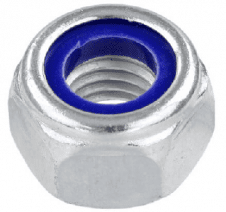

DIN 6924 Гайка самоконтрящаяся
Стандарт
DIN 6924
ISO
ISO 7040
Цена от
3,24 ₽
Размерный ряд
от 5,5 до 75 мм
Гайки DIN, ГОСТ » DIN 6924 / ISO 7040 Гайки самоконтрящиеся, самостопорящиеся шестигранные
Варианты и размеры (22)
| Наименование | Размер | Длина, мм | Материал | Покрытие | Цена |
|---|---|---|---|---|---|
| DIN 6924 Гайка самоконтрящаяся M10 L=16мм | M10 | 16 | 4,70 ₽ | ||
| DIN 6924 Гайка самоконтрящаяся M12 L=18мм | M12 | 18 | 5,40 ₽ | ||
| DIN 6924 Гайка самоконтрящаяся M14 L=21мм | M14 | 21 | 6,20 ₽ | ||
| DIN 6924 Гайка самоконтрящаяся M16 L=24мм | M16 | 24 | 7,10 ₽ | ||
| DIN 6924 Гайка самоконтрящаяся M18 L=27мм | M18 | 27 | 8,10 ₽ | ||
| DIN 6924 Гайка самоконтрящаяся M20 L=30мм | M20 | 30 | 9,10 ₽ | ||
| DIN 6924 Гайка самоконтрящаяся M22 L=34мм | M22 | 34 | 10,20 ₽ | ||
| DIN 6924 Гайка самоконтрящаяся M24 L=36мм | M24 | 36 | 11,20 ₽ | ||
| DIN 6924 Гайка самоконтрящаяся M27 L=41мм | M27 | 41 | 13,00 ₽ | ||
| DIN 6924 Гайка самоконтрящаяся M3 L=5мм | M3 | 5 | 2,20 ₽ | ||
| DIN 6924 Гайка самоконтрящаяся M30 L=46мм | M30 | 46 | 14,90 ₽ | ||
| DIN 6924 Гайка самоконтрящаяся M33 L=50мм | M33 | 50 | 16,70 ₽ | ||
| DIN 6924 Гайка самоконтрящаяся M36 L=55мм | M36 | 55 | 18,90 ₽ | ||
| DIN 6924 Гайка самоконтрящаяся M39 L=60мм | M39 | 60 | 21,10 ₽ | ||
| DIN 6924 Гайка самоконтрящаяся M4 L=7мм | M4 | 7 | 2,60 ₽ | ||
| DIN 6924 Гайка самоконтрящаяся M42 L=65мм | M42 | 65 | 23,50 ₽ | ||
| DIN 6924 Гайка самоконтрящаяся M45 L=70мм | M45 | 70 | 26,00 ₽ | ||
| DIN 6924 Гайка самоконтрящаяся M48 L=75мм | M48 | 75 | 28,60 ₽ | ||
| DIN 6924 Гайка самоконтрящаяся M5 L=8мм | M5 | 8 | 2,90 ₽ | ||
| DIN 6924 Гайка самоконтрящаяся M6 L=10мм | M6 | 10 | 3,20 ₽ | ||
| DIN 6924 Гайка самоконтрящаяся M7 L=11мм | M7 | 11 | 3,50 ₽ | ||
| DIN 6924 Гайка самоконтрящаяся M8 L=13мм | M8 | 13 | 3,90 ₽ |